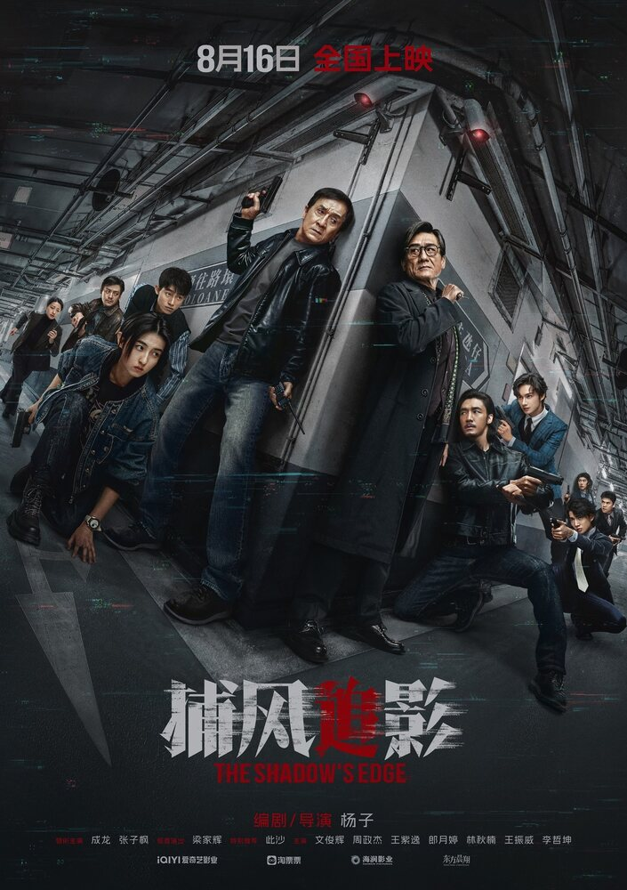
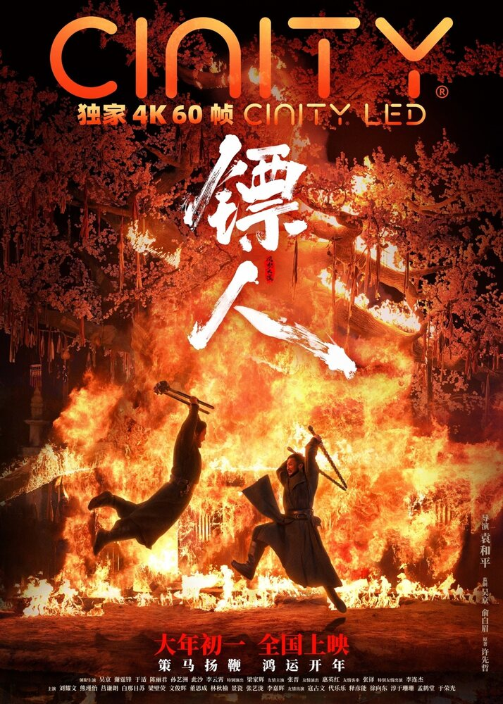
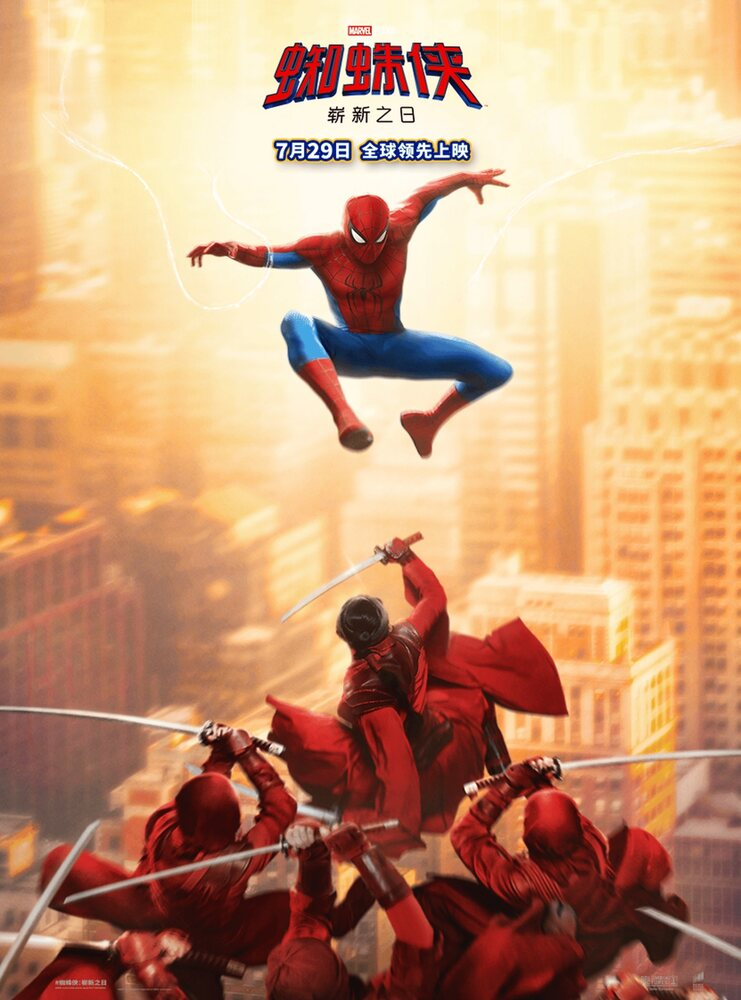

栏目 / 04
速度之外，先看见选择
追捕、护送与城市危机并不只有快慢，也让人物必须决定自己愿意保护什么。



本栏目影片
没有找到相符的影片，请换一个关键词。
犯罪 / 动作
老派跟踪经验遇上城市监控系统，一场猫鼠追捕从细节开始。
动作 / 武侠 / 古装
镖客刀马护送神秘人物西行，江湖规则在长路上不断改写。
动作 / 科幻 / 冒险
当世界忘记彼得·帕克，成为蜘蛛侠反而意味着重新开始。